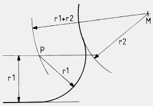

Geometrie
Zeichnerische Konstruktion von Kreis- und Bogenanschlüssen
Übersicht
Alle beschriebenen Konstruktionen können mit Zirkel, Lineal und einem Stift nachvollzogen werden. Die hier aufgeführten Konstruktionen sind teilweise miteinander kombinierbar. Die Eine oder Andere der Konstruktionen ist als Bestandteil in einer anderen Zeichnung wiederzufinden. Ist dieser Umstand für eine der Konstruktionen erheblich, wird darauf durch Verlinkung hingewiesen!
Inhalt
- die Ellypse
- das Oval
- Spirale 1
- Spirale 2
- Außenbogen an zwei Kreisen
- Innenbogen an zwei Kreisen
- Bogen Innen/Außen
- Bogen an Gerade & Kreis
Die Ellypse
 Zuerst werden von Gleichem Mittelpunkt aus zwei Kreise gezeichnet, die in ihrem Durchmesser mit der Schmalsten und der Breitesten Stelle der zu Zeichnenden Ellypse übereinstimmen sollen. Nachdem der größere Kreis zwölfgeteilt wurde, man kann den Kreis auch feiner teilen, lege man von den Schnittpunkten Senkrechte in den Zwischenraum zum inneren Kreis, und von den Schnittpunkten mit dem inneren Kreis aus Waagerechte Linien nach Außen hin. An den Schnittpunkten dieser Linien entlang entsteht die Kontur der Ellypse.
Zuerst werden von Gleichem Mittelpunkt aus zwei Kreise gezeichnet, die in ihrem Durchmesser mit der Schmalsten und der Breitesten Stelle der zu Zeichnenden Ellypse übereinstimmen sollen. Nachdem der größere Kreis zwölfgeteilt wurde, man kann den Kreis auch feiner teilen, lege man von den Schnittpunkten Senkrechte in den Zwischenraum zum inneren Kreis, und von den Schnittpunkten mit dem inneren Kreis aus Waagerechte Linien nach Außen hin. An den Schnittpunkten dieser Linien entlang entsteht die Kontur der Ellypse.
Das Oval
 Im Unterschied zur Ellypse, deren Radien sich stetig ändern, besteht das Oval aus zwei mal zwei, also vier, Radien. Die Grundlinie A, B wird zuallererst halbiert und dann geviertelt. Früher wäre sie gevierteilt worden, aber die Zeiten sind vorbei! Um die dabei entstehenden Punkte, hier M1, M2, M3, werden Bögen mit dem Radius r1 und nebenstehend gezeigtem Umfang gezeichnet. Von M2 und M3 aus werden Linien, durch die Schnittpunkte der Kreise miteinander, gezogen. Dadurch erhält man die Punkte C und D. Diese sind die Mittelpunkte der großen Bögen mit dem Radius r2, die auf den gegenüberliegenden Seiten an die kleinen Radien anschließen.
Im Unterschied zur Ellypse, deren Radien sich stetig ändern, besteht das Oval aus zwei mal zwei, also vier, Radien. Die Grundlinie A, B wird zuallererst halbiert und dann geviertelt. Früher wäre sie gevierteilt worden, aber die Zeiten sind vorbei! Um die dabei entstehenden Punkte, hier M1, M2, M3, werden Bögen mit dem Radius r1 und nebenstehend gezeigtem Umfang gezeichnet. Von M2 und M3 aus werden Linien, durch die Schnittpunkte der Kreise miteinander, gezogen. Dadurch erhält man die Punkte C und D. Diese sind die Mittelpunkte der großen Bögen mit dem Radius r2, die auf den gegenüberliegenden Seiten an die kleinen Radien anschließen.
Die Spirale (1. Möglichkeit)
Zunächst werden zwei im rechten Winkel zueinander stehende Parallelenpaare gezeichnet. Die Senkrechten und Waagerechten Parallelen besitzen die gleiche Distanz zueinander. Diese bestimmt den Anfangsradius der Spirale. Die Bögen werden jeweils im Viertelkreis gezogen, danach wird der Zirkel einen Schnittpunkt weitergesetzt und der nächste Viertelkreis wird an den Vorhergehenden angeschlossen. somit erweitert sich die Spirale in jedem Viertelkreis um den Betrag der Distanz der Parallelen. Spirale 2, siehe hier.
Die Spirale (2. Möglichkeit)
Für die Zweite hier vorgestellte Spiralenkonstruktion wird nur eine Grundlinie und zwei darauf abgetragene Punkte, A und B, benötigt. Sie markieren den Anfangsradius und dienen gleichzeitig als Mittelpunkte der Radien. Beginnend mit A und dann abwechselnd mit B werden nun Halbkreise auf der Grundlinie geschlagen. Dabei erweitert sich die Spirale um 2r, sie erscheint gleichmäßiger als die vorhergehende Spiralenkonstruktion. Letztere hat durch die Radiuserweiterung pro Viertelkreis, im Gegensatz zur Erweiterung pro Halbkreis bei dieser Variante, ein mehr organisches Aussehen.
Außenbogen an zwei Kreisen
Die Länge der Grundlinie M1 nach M2 entspricht der Höhe des Bogens mit dem Radius r3. Man schlage einen Kreisbogen vom Mittelpunkt der Kreise mit r3 - dem Radius des jeweiligen Kreises auf die dem zu zeichnenden Bogen gegenüberliegende Seite, und zwar so, daß die Kreisbögen sich kreuzen. Der dabei entstehende Punkt P1 ist der Mittelpunkt des Bogens mit dem Radius r3.
Innenbogen an zwei Kreisen
Wie die unter der Zeichnung formulierte Bedingung aussagt, muß der Radius r3 gleichgroß oder größer sein, als der Abstand der Mittelpunkte der Kreise abzüglich der Radien r1 und r2 der Kreise. Er könnte sonst die Kreise nicht berühren. Nun schlage man einen Kreisbogen vom Mittelpunkt der Kreise mit r3 + Radius des jeweiligen Kreises auf die Seite des zu zeichnenden Bogens, und zwar so, daß die Kreisbögen sich kreuzen. Der dabei entstehende Punkt P ist der Mittelpunkt des Bogens mit dem Radius r3. Die Verbindung einer Geraden und eines Kreises durch einen Bogen funktioniert ähnlich.
Bogen Innen/Außen
 Der Mittelpunkt dieses Bogens wird sowohl mit Addition, als auch mit Subtraktion verifiziert. Wieder werden von den Mittelpunkten der Kreise Bögen geschlagen. Beim Kreis, von dessen Umfang sich der Bogen nach Außen entfernen soll, wird der Bogenradius r3 zum Kreisradius hinzuaddiert. Bei jenem Kreis, dem sich die Bahn des Bogens hinzuneigt, wird der Kreisradius von r3 subtrahiert.
Der Mittelpunkt dieses Bogens wird sowohl mit Addition, als auch mit Subtraktion verifiziert. Wieder werden von den Mittelpunkten der Kreise Bögen geschlagen. Beim Kreis, von dessen Umfang sich der Bogen nach Außen entfernen soll, wird der Bogenradius r3 zum Kreisradius hinzuaddiert. Bei jenem Kreis, dem sich die Bahn des Bogens hinzuneigt, wird der Kreisradius von r3 subtrahiert.
Bogen an Gerade & Kreis
Ähnlich wie beim Innenbogen an zwei Kreisen wird hier zum Kreisradius r2 der Radius des Bogens r1 hinzuaddiert, und ein Kreisbogen geschlagen, der der Konstruktion des Punktes P dient. Über der Geraden wird eine Parallele mit dem Abstand r1 zur Geraden gezeichnet. An der Stelle, an der die Parallele den Kreisbogen r1 + r2 kreuzt, befindet sich Punkt P, der den Mittelpunkt des Bogens markiert, der die Gerade mit dem Kreis verbindet.